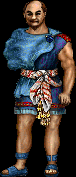

|  |
After losing his right arm in action at Balo na’te Din, Oxal was discharged from service with the Ko’catan Army and assigned to The Barking Monster. It is a great honor to be the veteran selected to run this military owned establishment, but Oxal performs the work with little apparent relish.
|
||||||||